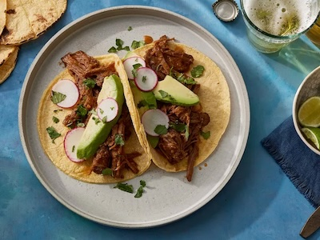

Home
Mexican Flan

Description
This Mexican flan recipe was given to me by my mother-in-law, who is from Durango, Mexico. I had to beg her for years to give me this custard recipe — she finally gave it to me one Christmas. I like to add orange zest, but the original dessert recipe calls for just pure vanilla.
Ingredients
- 1 cup white sugar
- 1 (14 ounce) can sweetened condensed milk
- 1 cup whole milk
- 3 large eggs
- 3 large egg yolks
- ¼ cup freshly squeezed orange juice
- 1 tablespoon grated orange zest
- 1 tablespoon vanilla extract
- 1 tablespoon cornstarch
- 1 cup heavy cream
Steps
- Place sugar into a heavy saucepan over medium-high heat. Cook, stirring constantly, until sugar melts and turns a golden amber color, about 10 minutes. Watch carefully once syrup begins to change color because it burns quickly. Carefully pour caramel syrup into a flan mold. Set aside to cool.
- Preheat the oven to 350 degrees F (175 degrees C). Place an oven rack in the middle position.
- Place sweetened condensed milk, whole milk, eggs, egg yolks, orange juice, orange zest, vanilla, and cornstarch into a blender; blend until smooth, about 1 minute. Pour in cream and pulse several times to incorporate. Pour mixture over cooled caramel syrup in the flan mold.
- Line a roasting pan with a damp kitchen towel. Place the filled flan mold carefully on the towel in the roasting pan, then place the roasting pan on the oven rack. Fill the roasting pan with enough boiling water to reach halfway up the sides of the flan mold.
- Bake in the preheated oven until the center of flan is set but still slightly jiggles when nudged, 45 minutes to 1 hour. Let cool, then refrigerate for at least 4 hours.
- To serve, run a sharp paring knife around the inside of the mold to release flan. Place a serving plate on the mold, then flip the mold over. Gently lift the mold to release flan and allow caramel syrup to cascade over custard. Remove the mold.

Tacos De Barbacoa
Description
These barbacoa tacos are packed with smoky shredded beef that's perfectly tender. Spices like cumin complement the chiles, while oregano and bay leaves add an earthiness to this recipe.
Ingredients
- 2 ripe plum tomatoes
- 1 small white onion, quartered
- 2 cloves garlic, peeled
- 4 chipotle peppers in adobo sauce
- 3 teaspoons kosher salt
- 1 ½ teaspoons chili powder
- 1 teaspoon ground cumin
- ½ teaspoon freshly ground black pepper
- 1 (3 pound) beef chuck roast, cut into 6-equal sized cubes
- 2 tablespoons olive oil
- 1 cup water
- 1 tablespoon light brown sugar
- 2 teaspoons dried oregano
- 3 fresh bay leaves
- 1 tablespoon lime juice
- corn tortillas, warmed
- 2 ripe avocados, peeled, pitted and sliced
- ½ bunch radishes, thinly sliced
- 2 tablespoons chopped fresh cilantro, or to taste
Steps
- Heat a large cast iron skillet over medium-high. Arrange whole tomatoes, onions (cut-side down), and garlic in the dry skillet in a single layer, working in batches if needed. Cook, turning occasionally, until charred on all sides, about 6 minutes for the garlic and about 12 minutes for the onions and tomatoes.
- Transfer charred vegetables to a blender and add chipotle peppers. Process until smooth, about 1 minute.
- Stir salt, chili powder, cumin, and black pepper together in a small bowl; season beef evenly with salt mixture.
- Heat oil in a Dutch oven over medium-high heat. Add beef in batches and cook, turning occasionally, until browned on all sides, about 3 minutes per side. Transfer browned beef to a large plate.
- Pour water into the Dutch oven and scrape up any browned bits from the bottom of the pan. Stir in onion-tomato mixture, brown sugar, oregano, and bay leaves. Reduce heat to medium-low and bring to a simmer.
- Nestle beef back into pot and cover. Cook, stirring and re-nestling beef occasionally (about every 20 to 30 minutes), until beef is tender and pulls easily apart with a fork, 1 hour and 45 minutes to 2 hours and 15 minutes. Remove bay leaves and discard.
- Remove beef from Dutch oven, place on cutting board; shred beef using 2 forks.
- Return beef to the Dutch oven, add lime juice, and stir to combine.
- To serve, place a few pieces of beef on a warm corn tortilla. Top with avocado, radishes, and cilantro.